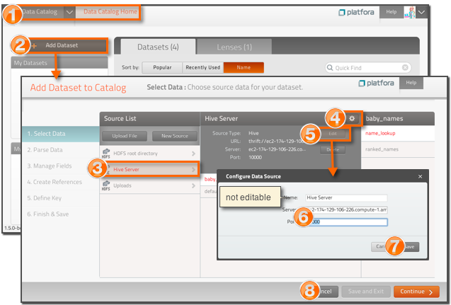

You typically do not need to edit a data source once you have successfully established a connection. If the connection information changes, however, you can edit an existing data source to update its connection information, such as the server name or port of the data source. You cannot, however, change the name of a data source after it has been created.

- Go to the Data Catalog page.
- Click Add Dataset to open the dataset workspace.
- Select the data source you want to edit from the Source List.
-
Click the data source information icon
 (to
the right of the dataset name).
(to
the right of the dataset name).
- Click Edit.
- Change the connection information for the data source. You cannot change the name of a data source after it has been saved.
- Click Save.
- Click Cancel to exit the dataset workspace.